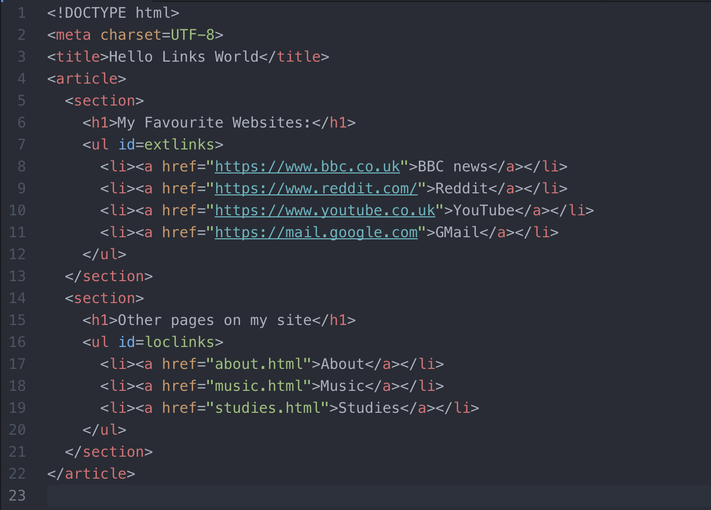

This website was created for my WEBF1 coursework.
Within this website is my Literature Review, focusing on Mitigating personal information exposure on the web, my work log which outlines what I have studied and learnt so far this year, and a chosen piece of media.
You can use the navigation button at the top of the page to view all this.
